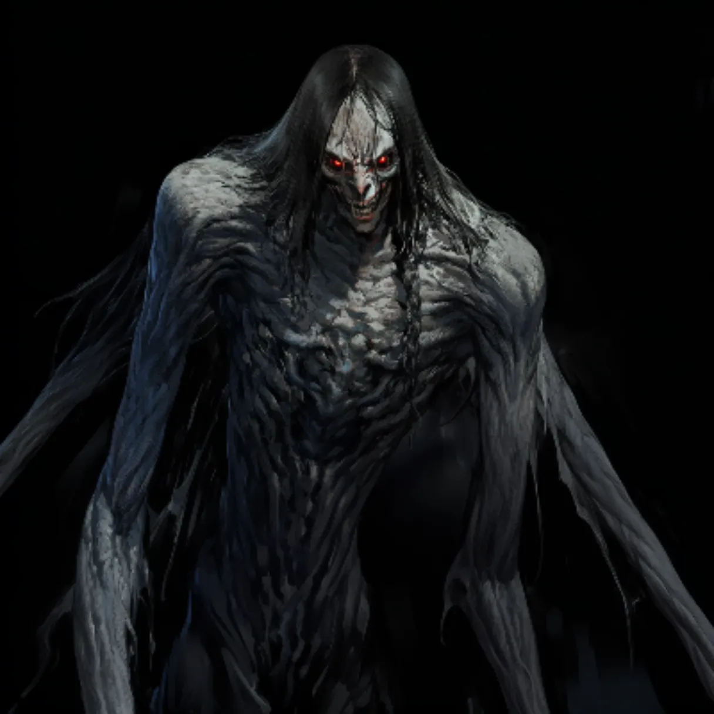
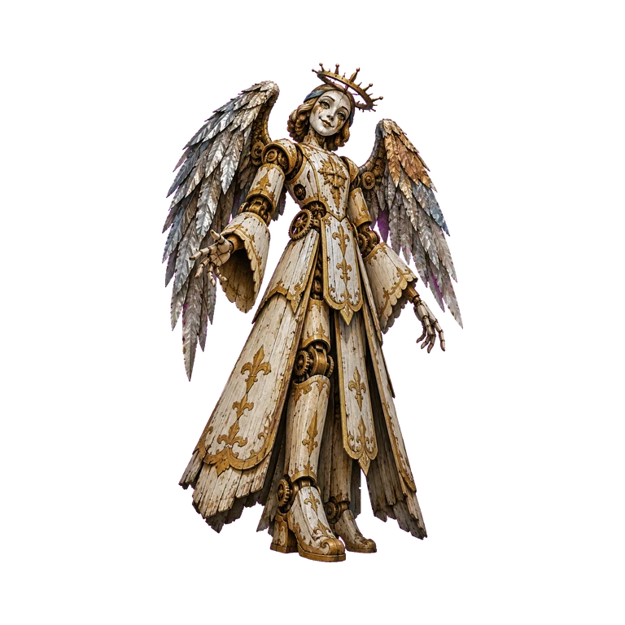
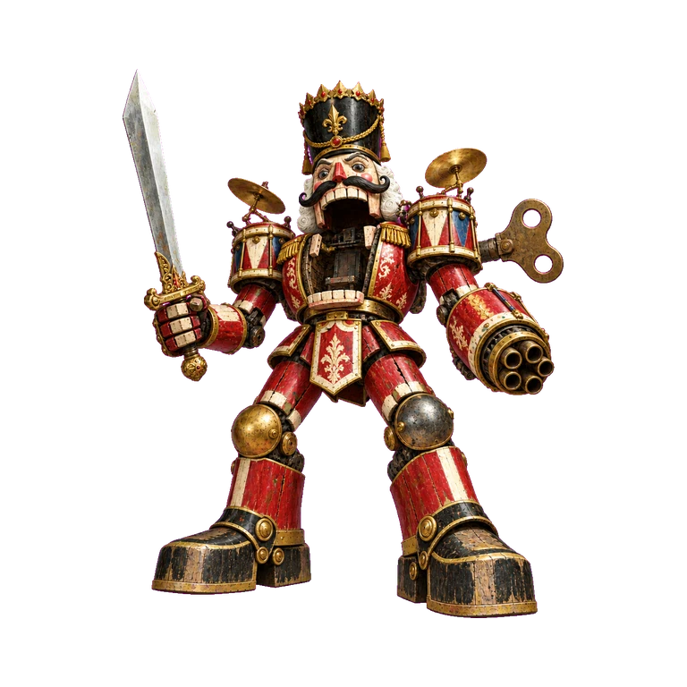

ㅋㅋㅋ
가문의 혈통에 뒤늦게 눈을 뜬 힘 이런 컨셉

그런거였나요
아니 저게 무어ㅑㅋㅋㅋㅋㅋㅋ
ㅋㅋㅋㅋㅋㅋㅋㅋ
ㅋㅋㅋㅋㅋㅋ
공식적으로 지능캐네
캐릭터가 괴로워하면 재밌으니까
그런 고뇌의 시간을 가지고
진료소...대충운영하고.
그러면 파티피플 내에서
전례없는 커다란 괴물 한나가 보입니다



그러면 약간 의아하다는듯 말합니다
"네... 사람이죠.."
"에휴... 됐네. 이제와서 할 말은 아니군."
그러면 생각보다 이 괴물 좀 소심해보입니다
그러면 곧바로 침울해집니다
(웃긴게 지금 모드 빼고 다 만나는 중
(제루스대변인
"할 말 있으면 해보게."
자신은 아주 오래 전부터 실버문(용버문)과 아는 사이였다는 것
그리고 용버문은 오랜 시간을 선지자 라는 이상한 외계인과 맞서싸워 이 지역을 지켜왔다는 것
거기에는 선지자들이 만든 전투노예인 당연히 하흐란과도 오랜 시간 대립해왔고 그들의 위협에 오랜 시간 연구해왔다고 합니다
"결국 또 거기인가."
(오?
그러면 제루스는 그 장치에 대해서 약간 조심스러운 것 같습니다
그 기계는 실버문이 다소 다른 의도로 만들어낸 물건이기 때문입니다
분노에 찬 누군가가 말입니다
"이곳에서 말하기 어려운 내용인가?"
(세줄 요약 끗

Long Rest (8 Hours, New Day)
4
"
(마엘은...!
(하지만 그것을 정정하는 것은 촌스러우므로 할다론에게 한 이야기인 걸로
(제측)
(아 제측이다)
(그 때 교회간 조합인데 대부분
라며 파티 뒤로 갑니다
Goodberry
하믈렛으로 옵니다
(문득 궁금한건데 실버문 아내 정상적으로 활동중인가요 저저번주에 물어본건데 아직 대답을 듣지못함
얼마 안가서 깨어날거라는 말을 들었습니다
마을은 상당히 깔끔하고 활기차보이는군요
군데군데 부서지긴 했지만 중앙에 완전히 시선을 모으는 구조물이 보입니다
(이런 저런 일이 있었을테니 반년보다는 더 흘렀을듯
"저기! 저기 베이커리 진짜 맛있는데!"
(진짜 보기만 해도 기빨린다
하믈렛에서 온 몇사람들한테 눈에 딱 보이는 이상하고 요란한 건물이 하나 보입니다
"세상은 눈 깜빡할 사이 변하는군..."
(뭐가문제냐는 표정으로 같이 보고있음)
리리는 알아볼 수 있는 이상한 마크가 하나 새겨져 있습니다
"필란이란 저 사람 아시는 분 있어요?" (포스터를 가리킵니다)
"세이가 녀석 죽고 이 필란이란 녀석이 상회를 집어 삼켰나...?"

지금은 수 많은 자선사업으로 많은 사람을 구원했고
거대한 신기한 테마파크를 건설해서
많은 사람들에게 즐거움을 선사하고 있다는 내용입니다
왈든과는 다르게 그 많은 일이 있고나서 마을이 파괴되긴 했지만 활기차고 평화롭습니다
"그러니까 홍보 겸 자기 어필을 막..."
눈썰미 좋은 사람들은 뭔가 어딘가에서 큰 소리가 나는걸 들을 수 있습니다
천사 문양의 오토마톤이 보입니다
물론 소리가 나는 쪽은 다른 곳입니다
(아
(다른 장난감
장난감 병정들이 뭔가를 질질 끌고가고있습니다

반파된 장난감이 바둥거리면서 끌려가는 모습이 보입니다
(안보이게 뭔가 씌여있는지 확인하는용도입니다
지나가는 사람들 사이에서도 오토마톤들과 아주 흡사한 반응이 보입니다
Detect Magic
당신의 감각을 믿을 수가 없겠군요
오토마톤입니다
Identify

이라며 당신의 팔을 툭 치고 툭툭 걸며 갑니다
"리리, 아가. 이 마을주민 중 네가 아는 사람이 있니?"
하지만 알 수 있는 것은
많은 사람들에게서 저 오토마톤과 비슷한 반응이 보이고 있다는 점입니다
두 눈을 빠득 빠득 하고 움직이더니
여러분과 눈이 마주칩니다
그러더니 성큼 성큼 걸어오더니
손을 뻗고 말합니다
(공포영화같아요ㅠ
이 주변만 그러한 느낌이 유독 심하게 들고 다른 곳에서는
딱히 그런 느낌이 들지는 않습니다
딱봐도 이상하군요
그러면
이미 거의 다 박살나서
(안갈거라고말해조
"...."
병정들이 자르릴 뜨면 부서진 장난감들을 확인합니다.
병정이...있을까요..?
다 죽었나 이거 멘딩오일로 수리하면 살아나려나
알 수 있을까요?
주변에서 그 병정들이
돌아다니는 모습이 보입니다 마치 군대를 연상시키듯 상당한 숫자입니다
아 그렇군요
(와 멘딩오일 여기서도
하지만 방금 박살난 그 대가리만
약간이지만 꿈툴거리고 있습니다
그래서 아주 그로테스크한 느낌을 주겠군요
머리를 꺼내서 누가 보는...시선이 닿지 않는 인적 드문 곳으로 이동해서 멘딩오일을 씁니다
(ㅋㅋㅠ 그건 좀 안타깝네요
이미 대파된 몸뚱이는 없고 대가리만 남아서 말이죠
(몸까지?
(헷갈려서;
어 이 부엉이 패밀리어 계속 할다론 옆에 붙어있었나요?
"마엘의 패밀리어였던가"
(아뇨
(가져가지마세요
(어우 이거 뭐야 깜짝이야
(ㅠㅠ
(불편하시면 마엘따라온걸로할게용...!)
자 rp와 선언해주세요
(아까 마을보러간다고했어서요
일단 pc들의 목적이 분리된 상황이 아니니깐
일단 모이는 방향으로 가죠
타이밍을 잡아도될듯
"...음..." (반응이 없다면 전서구처럼 쓰려할것 같네요
이 태엽인형을 가지고... 갔다고 하겠습니다
(여러분을 부르고 싶었어요
(ㅋㅋㅋㅋㅋㅋㅋㅋㅋㅋㅋㅋㅋ
(너무 여기서 씬 길게 가져가면
어떤 허름한 술집? 으로 향합니다
그리고 그 앞에서 서로 마주치겠네요
파티피플 이라고 적혀있습니다
"그걸 가져와도... 되는 거예요?"
"아마 안되겠지. 얼른 들어가야겠군."
단순히 동력원이 없는게 문제로 보입니다
"남들 눈이 있는 곳에서 할만한 일은 아니군."
"들어가서 확인해보지."
그러면 고개를 끄덕입니디ㅏ
내부에서 상당한 인기척이 느껴집니다
"불안하다면 우리가 한번 살펴보지."
(우리 = 리리랑 실버문입니다
@하고 일단 문에 노크해봅니다
그 안에서는 어떤 남자가...나옵니다
(어?
(왜 니어데스야
(아 아니구나

하고 여러분을 보자 반가운 얼굴로 맞이합니다
"반가운 얼굴.. 반가운 모습들"
완전무장한 상태로 보입니다
(아니면 눈치챈건가요?
(아 리리가 말했네
방금과 같은 그런건 아니겠군요. 하지만 그 종류를 세세하게 구분하지 못할 정도로 복합적입니다. 애초에 디텍트 매직이니까요!
그러며 뒤에 있는 사람들을 보고 그렇게 놀라진 않는거같습니다
"들어오시지요."
"우리들의 모험가길드에"
여러분을 경계하는 것 처럼 보이는 무장한 사람들이 안에 잔뜩있습니다
그러면 리아드라고 불린 청년은 안에 있는 사람들에게 " 괜찮습니다 동료들입니다"
"얼마나 감사한지 모르겠습니다."
"우리가 와서 고맙다니 그건 무슨 소리인가?"
"그 많은 하이맷 상회 사람들을 어떻게 설득한건지 도무지 알 수 없었습니다"
"그리고... 직감적으로 우리는 마을에 이상한 일이 벌어졌음을 깨닳았습니다"
(아 했다
"척후들이 비밀 통로를 발견했다고 했거든요"
"그건 믿기 힘든 일이긴 하나... 그렇게 생각하면 말은 되는군..."
"아주 옛날에 제페토.. 그러니깐 실버문씨는 저런 종류의 장난감을 아주 많이 만드셨거든요"
라며 눈 앞의 실버문의 눈치를 보더니
"지금부터는 그냥 제페토라고 부르겠습니다."
안에 있는 가드들도 전부 무기를 듭니다
"자네가 들고 왔으니 자네가 결정하게."
태엽이 감기자
갑자기 노래를 부르기 시작합니다
그러면 눈알이 한 5번 정도 위에서 아래로 회전하더니
"어..어어!!"
그러면 여러분을 보고 소리지릅니다
"꺄악!!!!!"
그러면 아아아악 한번 소리칩니다
"일단 진정 좀 하게."
"아 그건.."
"그렇게 된거죠!"
"저번에도 잡혀가더니 또 잡혀간겐가..."
"그리고 어느 순간부터 다들 그 덩치 말을 듣기 시작했어요!"
@리아드 보면서 저게 뭘 말하는건지 알겠냐는 표정을 지어봅니다
"그리고.. .음"
"사람들을 납치해왔어요"
"그건 좀 의아하긴 하군."
비전학
22
"그 피노 녀석 말일세."
"....자네를 업고 가기라도 하란건가?"
비전학
13
비전학
12
"피노는 좀 특별하거든요":
"바로 죽이지 않은 것도 그것때문일거야"
"그렇다면 그 피노 녀석만 되찾아온다면 이 촌극도 끝나겠군."
"아무래도 저 피노 녀석을 구해봐야 할거 같은데."
"어쩌겠나. 가보겠나?" 하고 동료들에게 묻습니다
"...(레니를 한참 쳐다봄) 너 머리만 있어도 말할 수 있나?"
"톱 같은거 없나?" 리아드한테 물어봅니다
다른 롱소드를꺼냅니다
"저는 태엽인형이라 태엽이 있어야해요!!!"
2...26...?정도는
네에
굿입니다
26...?
아 마스터님 여쭤볼거 있는데
이렇게 배우는군요 ㅋㅋㅋ
이거 조율템인가요??
머시라
아쉽네요
조율이 없으면
끝없이 강해지니까요
솔직히 4개도 부족하다고 생각해요
쓸게 너무 많아
생각보다 무섭슴
그건 그렇고 야즈라크랑 마엘리스도 좀 적극적으로 롤플레잉이나 대화에 참여를 했으면 좋겠습니다
(죄송해요 저 배탈이났는지
(계속 화장실와리가리중...
그런 사정이라면 어쩔 수 없죠
장난감 병정들은
눈에서 불이 들어와서 어두운 상황에서도 잘보는 것 같군요
그러면 여러분을 따라오라고 하더니
"일단은 그래... 별 방법이 없긴 하니..."
천사가 보입니다
(오우 깜짝이야
하고 마엘 쪽 봅니다
내부에서는
장난감들이
걸어다니고 있는 모습이 보입니다.
그들은 모두 오와 열을 맞춰서 뭔가 군인 처럼 걸어다닙니다
그 숫자가 엄청나게 많군요
누가 보면 마치 전쟁이라도 하려는 것 처럼 만들어댔습니다
"그래도 오늘은 몸이 날랜 친구들이 많으니까 말일세."
Pass without Trace
(리아드도 같이 가나요?
여러분은 뭔가가 저벅 저벅 발에 밞힙니다
응? 뭔가 철덩어리 같은..
잘 보면 선로로 보입니다
@선로에 손을 대봅니다. 뭔가 다가오는 듯한 진동이 느껴지나요?
"일단 숨어서 습격하지."
곧 칙칙폭폭 소리를 내면서
엄청난 속도로 선로를 향해서 달려오고 있습니다
그러면... 지네 처럼 엄청나게 다리가 많은 기차가
이러면 선로가 왜 필요한거야!?
지도상에서 8과 5 사이에있는 선로로 보입니다
이 터널 안으로 들어가기 전에 하차하는데 실패하면
반대로 왕창 돌아가버리겠군요!
하지만 성공한다면 무엇보다도 빠르고 방해없이
고래로 향할 수 있습니다
"몇 사람은 여기서 찢어지는 것도 방법이겠습니다."
"별동대를 조직해서 이목을 끌도록 하죠"
(그 경우 두 씬을 다 묘사해야하면
(우리 시간이 허락하는한 그리 좋지는 않을듯하니..
(아니면 상관없습니다
"무운을 빌겠네." 하고 리아드 어깨를 가볍게 두드립니다
(그런가봐요
그 기차 방향이 그러져 있어용!
(타봐도 좋을거 같아서..
기차가 오는걸 기다리기로 합니다
곡예
25
관람 기차라서 높지는않네요ㅕ 하지만 여기가 서는 곳은 아닌지
그대로 지나치고 있습니다
여러분은 하이재킹하듯이 탑승합니다. 이것은 곡예 굴림이 되겠네요!
곡예
14
곡예
17
곡예
16
곡예
25
바로 운전수입니다!
은신
26
협박하는게 아니라
은신
29
은신
32
은신
23
은신
38
그리고 기차는 점차 터널로 들어가는군요
터널 안으로 들어가버리면
한동안 나오기 힘들겁니다
완전히 반대로 빠져나가버리겠죠!
(신난 할다론
위에 난간이 하나 보이는데
곡예
8
바로 들어갈 수 있을 것 같습니다
(살려주십시오
비전학
23
곡예
23
곡예
18
곡예
16
Misty Step
무사히 안착에 성공합니다
할다론이 살짝 삐끗하지만
성공한 누군가가 잡아줄 수 있겠군요
(다르게 올라갈 수도 있구나
여러분의 눈 앞에는 고래 조형물이 보입니다.
배를 타고 그 안으로 들어가야하는군요
"어떻게든 놀이기구를 타게 되긴 하네...!"
@숨어서 배가 오길 기다려봅니다
그러면... 내부에는 수상한 조형물들이 있습니다. 마치 무언가를 만들다만 것 같은..
역사학
22
(조형물 관련해서 역사나 종교학..?
역사학
15
역사학
14
역사학
17
역사학
24
그들 모두는 태엽이 이어져 있으며 생명이 없는지 움직이진 않습니다
그리고 무언가를 전시해둔 것으로 보이는데
이들은 모두 어떤 존재들을 상대하기 위해서 만들어진 것으로 보입니다
정신을 건드리는 그 누군가를 말이죠
그래서 정신 간섭이 불가능한 존재를 만들어냇는데
그것이 바로 꼭두각시들입니다
그리고 천장에 있는 이미지에서
그 꼭두각시들을 하나로 통재하는 무언가가 그려져 있습니다
그 형체는 잘 보이지 않는군요
"제페토가 인형 만들기에 몰두한건 단순한 취향이 아니었던거군..."
하지만... 그리고
아주 일정한 소리가 말이죠
(ㅋㅋㅋㅋㅋㅋㅋㅋㅋ
"...뭘 만드는 소리 같기도 하고..."
Detect Magic
묘한 시설들과 함께
몇개의 문들이 보입니다
이곳은 대략적으로 봐서 무언가를 만드는 시설로 보입니다
(지금 문 안으로 들어오긴 한건가요?
"문은 총 4개 정도로 보이는군..."
"하나씩 확인해보겠나?"
"이녀석이 뭘 알거 같지도 않고." 레노를 보며 말합니다
이 친구의 정보는 그 이상은 없나보군요!
"일단... 다른 이견이 없다면 저기 왼쪽문 부터 확인해보지."
시간이 좀 오래걸리니깐
선언하면 그냥 제가 다 열고 바로 옮기겠습니다
(은신한 상태로 살펴볼게요
선언을 해주세요
그렇게 바로바로 이동해서 행동만 해버리면 제가 반응하기 어려우니
내부에서는 뭔가 만들어지고 있는게 보입니다. 꼭두각시의 머리를 찍어내는게 보이네요
아니면 천사모양?
그러면 마치 사람들을 닮은 것 처럼 생겼습니다
맞은 편 방을 확인하자 묘한 관들이 보입니다
꽉 차 있지는 않지만
그 안에는 군데 군데 사람들이 들어가 있습니다
그리고 그 앞에는 이름인듯 라벨이 붙어있습니다
비전학
17
시체를 담은 것으로 보입니다
그리고 그 안에 있는 시체는..
제법 시간이 지난걸로 보입니다
그리고 그 이름이 새겨져 있네요
세이가
비전학
25
비전학
4
그리고 죽은 자가 말을 안들었을 때를 대비해서 고통을 주는 버튼도 있습니다
그야말로 죽어서도 고문하는 장치입니다!

"정보를 얻어낼 만한 게 있을지..."
"밤마다 질문하는거에 답변하지 않으면"
"죽음의 고통을 줬어!"
"그걸 또 좋다고 했구만."
"그녀와 그 병졸들이 전마스터와 그 아내를 죽이는걸 너희들이 못봐서 그래"
"이상하게 그녀는 그 아르벨이라는 녀석을 죽이는데 집착하고 있었어"
"그리고 그를 따르던 모험가들을 죽이는데 성공했지. 아 그 이후는 알거야.. 그 시체는 내가 회수했으니깐.. 파티를 생각한 조치였지"
"그녀가 자기 아빠의 얼굴 정도는 보고싶어할거라 생각했거든!"
"그리고...."
"실패했어"
"모두 정신을 잃었고 아르벨 키시암은 사라져 있었어"
"그리고 그녀.. 러스티 쥬덴은 고통에 차서 바둥대고 있었지. 그 자리에 있던 모두가 무슨 상황인지 전혀 이해하지 못하고 있었어"
"좀 이상한 얘기지만... 아무튼 그 러스티 쥬덴이라는 자가 아르벨 키시암을 노린건 사실이네. 먹비단에게 들은 얘기와 일치하는군."
하고 동료들에게 설명합니다
"어지간히 라스티와 동맹을 맺고 싶은 모양이더군"
"그는 이곳에 아직도 아르벨 키시암이 있다는 결론을 내렸어"
"하나하나 잡아서 없애다 보면..."
"나올거라는 판단이었지"
"참..."
하고 다른 이들을 봅니다
(앗
(그럼 그냥 가자...
말려도 되나요
ㅋㅋㅋㅋㅋㅋㅋㅋㅋㅋ
(소란을?
하고 그냥 나갑니다
(오
지금까지 본 인형과는 다르게
옷 같은 것도 화려하게 입고
만든 사람의 애정이 듬뿍 느껴지는 그런 물건입니다

마치 마취라도 당한 것 처럼
잠들어있군요
인형들이 많습니다
아주 정교한 사람 인형이라
구분이 안갈 정도입니다
관에 자고 있는 사람들
딱 그것과 거의 동일하게 생긴 인형들입니다
그리고 피노는... 뭔가 이곳에서 잠들어있는데
의자에 속박되어있고
그 의자가 뭔가의 장치로 주렁주렁 도배가 되어있습니다
드럼통 같이 생긴 피스톤 장치가 그 역할을 하고 있는거같군요
그러면... 제작대에는 뭔가의 기록물이 있습니다
"앞으로 열흘만 있다면 아르벨 키시암이 있는 곳을 완전히 계산해낼 수 있다"
라고 적혀있습니다
그리고
관에는 아르벨 키시암 이라고 적혀있는 관이 보입니다
아무래도 그 관에 넣어서 보낼 생각인 것 같군요
열흘만 지나면 이들이 아르벨 키시암을 찾아낼 수 있다는 뜻으로 들립니다
열흘을 기다리겠습니까. 아니면...
지금 피노를 깨웁니까?
(다들 어떻게 생각하시나요
"미안하지만 나는 깨워야한다고보네. 지금 저기서 우리 때문에 목숨을 건 젊은이들이 있으니 말일세."
(미안하다 아르벨아 할다론은 큰 유감이 없다...
(리리는 약간 조바심이...)
"그 쥐 녀석을 다시 만나보긴 해야겠구만."
"아까보니까 이 장치를 분석하는거 같던데, 해제할 수 있겠나?" 하고 마엘에게 물어봅니다
(아이덴티파이로 해제법을알아낼 수 있나요?)
(아 딱 1이 모자라네
(가이던스 없나요 혹시
(들어가는구나
Bardic Inspiration
그러면 머리가 아픈듯이
"제..제엔장.."
"곰탱이...?"
"업고 가야겠군."
"내 친구~!"
"제페토의 실패작! "
"빌어먹을 곰탱이 녀석이 또!"
여러분은 어떻게 합니까
우리 시간이 없으니깐 이거 깔끔하고
아주 치명적인 주사위 굴림 하나로
대체하는게 어떨까요
(뭘 하려고
스킬 챌린지 3회입니다
실패하면 잡힙니다ㅓ
(단체굴림인가요??
피노가 해체된 것에 대한 반동일까요?
꼭두각시들이 일제히 픽픽 쓰러지는게 보입니다
그들 중에는 가장 큰 꼭두각시
이 거대한 인형이 보입니다
그리고 그것이 안으로 다가와서
그 거대한 두 눈에서 라이트가 뿜어져나외ㅏ
주변에서 침입자를 색출해내고 있습니다
자 그러면 여러분은 어떻게 합니까?
(로 해도 되나요 여러분
은신
23
은신의 불리점이 부여됩니다. dc는 13
은신
32
은신
21
은신
32
은신
20
Longstrider
여러분은 금방 정문을 향해서 달려나갈 수 있습니다
여러분이 입구쪽으로 가려고 하면
감지
10
그대로 자기장에 닿은 것들이 밀리기 시작합니다. 마치 실체 벽 처럼 말이죠
이상하네요?
자 그러면... 여러분은 정문을 향해서 뛰어갑니다. 감지 굴려보세요
감지
7
감지
19
Bardic Inspiration
감지
19
감지
17

네
Thunder Step
DC 15 : 내성 굴림
피해: 15
건강 내성
15
그러면 순식간에 벌어진 일이었습니다
마엘레스가 순식간에 왓다 갔다를 반복하더니
모두 별다른 부상없이 펜스를 넘어가버립니다
Benign Transposition
"으음... 고맙네."
이상한 거대한 꼭두각시가
(운동이라니
그러자 여러분 바로 앞에는 산같은 높은 토대가 만들어집니다
자 이것은 올라가서 이 영역에서 탈출해야합니다
Ring of the Sky Hunter
ㅋㅋㅋ
Bardic Inspiration
내용이 바뀌겠네요
운동
10
Thunder Step
피해: 9
실버문이 불리점 굴리고
곡예
17
@떨어지려는 리리를 낚아채서 슝 하고 올라갑니다
그러면 일단 오늘 세션은 여기까지!
수고하셨습니다
좀 아쉽지만요 ㅋㅋㅋ
배틀 메카 써야했는데
Flamethrower
피해: 57
와우
튀길 잘했다
튀자 튀어
Sword
피해: 20
Sword
피해: 29
전열 없는 파티에
뭘 내보내려하신거에요
ㅋㅋㅋㅋㅋㅋㅋㅋㅋㅋㅋㅋㅋㅋㅋㅋㅋㅋㅋㅋㅋㅋㅋㅋㅋㅋㅋㅋㅋㅋㅋㅋ
Flamethrower
피해: 12
Grenade Launcher
DC 13 : 내성 굴림
피해: 13